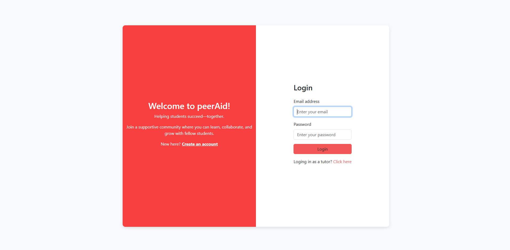
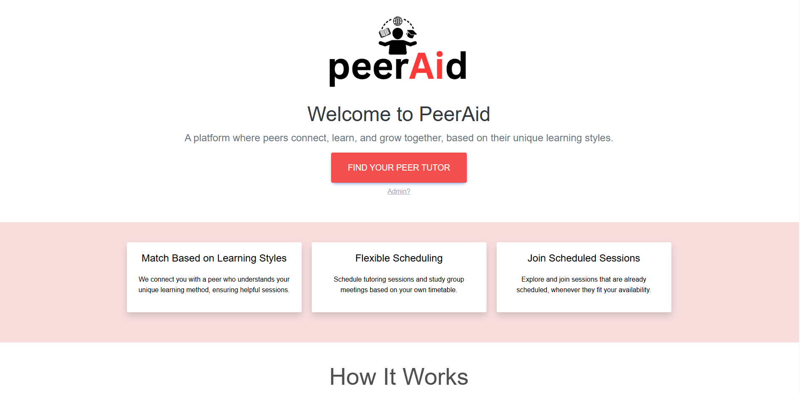
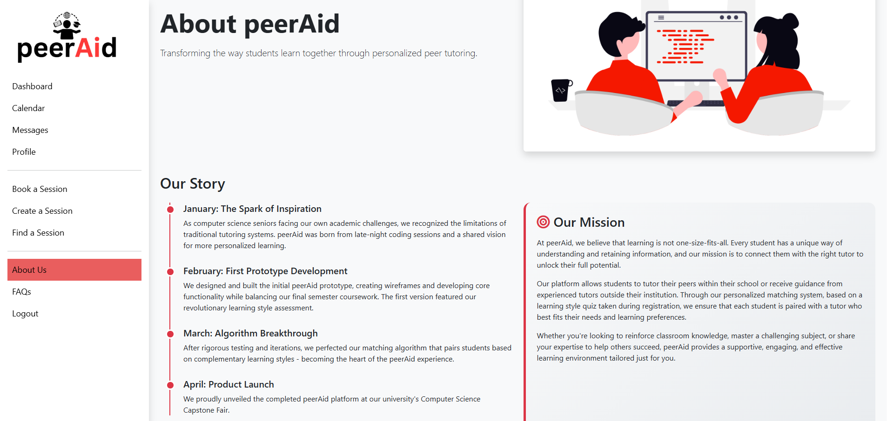
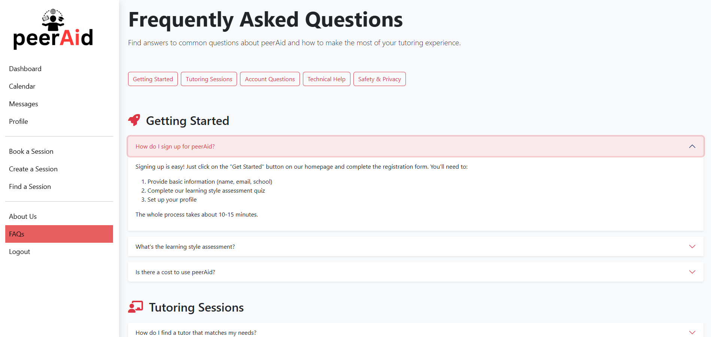

peerAid
Academic Capstone ProjectStudent tutoring platform designed to connect students with compatible tutors using AI-assisted learning style matching.
Key Contributions
- Coordinated project requirements, deliverables, and updates across multiple areas of the platform
- Reviewed user-facing content across key pages to ensure consistent terminology, messaging, navigation, and user experience
- Documented project updates, decisions, and action items through weekly team meeting minutes
- Reviewed completed work for clarity, usability, consistency, and alignment with project requirements
- Designed and developed the platform's front-end experience, translating project requirements into responsive, user-friendly interfaces
Project Artifacts
Selected documentation and interface examples
UI Preview




Weekly Meeting Minutes
Documented project updates, decisions, and action items from peerAid capstone meetings.
View Document →Content Consistency Checklist
Reviewed platform content for consistency across key pages before implementation.
View Document →